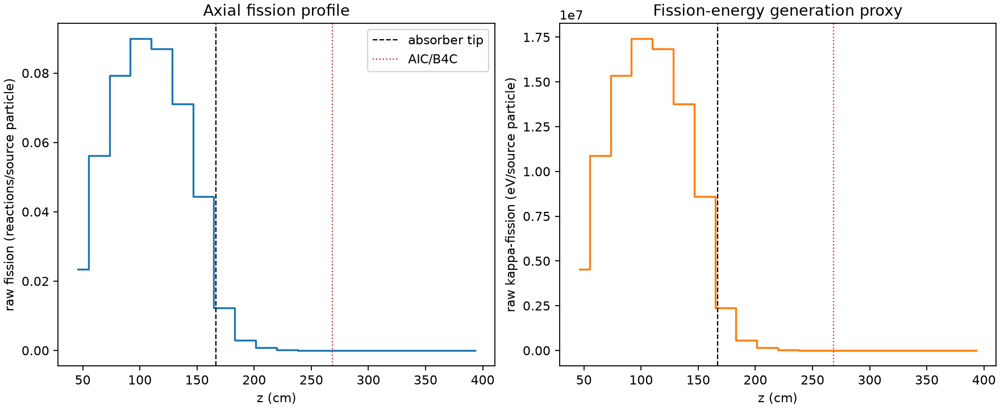
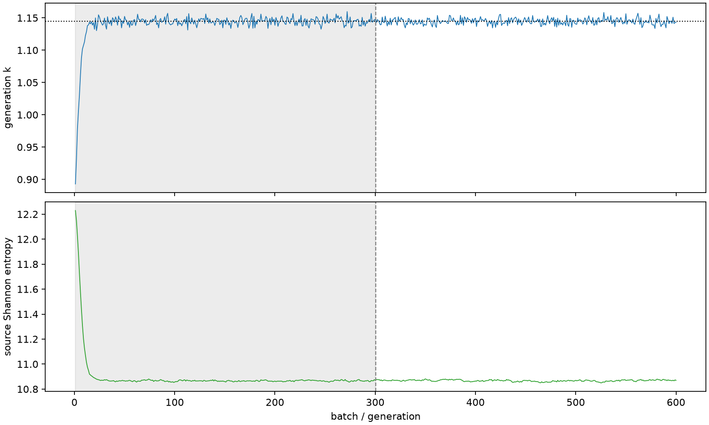

| field | value |
|---|---|
| experiment | V2-STAGE_128_OGRENCI_01-0019 |
| k | 1.144820143295798 |
| MC standard error | 0.00018431326040245732 |
| seconds | 960.9931164209993 |
| acceptance | not_assessed |
| convergence | review_required |
Completed is output integrity only; physical and statistical review required. Zero tallies do not prove zero production or zero uncertainty.
| diagnostic | value |
|---|---|
| geometric fuel voxels | 5280 |
| zero fission tally voxels | 1283 |
| low signal fuel voxels | 2323 |
| low signal fission share | 0.00011154114847978152 |
| low signal kappa share | 0.00011157706653263508 |
| important fission share | 0.950029255586969 |
| previous filter included | 2957 |
| duration estimate s | 1562.5173488400023 |
| actual minus estimate s | -601.524232419003 |
| fission relative MC error | statistics |
|---|---|
| all_geometric_fuel | {"voxels": 5280, "positive_mean_voxels": 3997, "zero_mean_voxels": 1283, "undefined_relative_error_voxels": 1283, "median": 0.015072148726549123, "p95": 0.8505625847056958, "maximum": 1.0000000000000002} |
| low_signal | {"voxels": 2323, "positive_mean_voxels": 1040, "zero_mean_voxels": 1283, "undefined_relative_error_voxels": 1283, "median": 0.5353398336574193, "p95": 1.0, "maximum": 1.0000000000000002} |
| important_95pct | {"voxels": 1765, "positive_mean_voxels": 1765, "zero_mean_voxels": 0, "undefined_relative_error_voxels": 0, "median": 0.006516711691799674, "p95": 0.011039290420055003, "maximum": 0.012690047818175147} |
| outside_previous_filter | {"voxels": 2323, "positive_mean_voxels": 1040, "zero_mean_voxels": 1283, "undefined_relative_error_voxels": 1283, "median": 0.5353398336574193, "p95": 1.0, "maximum": 1.0000000000000002} |
| kappa_fission relative MC error | statistics |
|---|---|
| all_geometric_fuel | {"voxels": 5280, "positive_mean_voxels": 3997, "zero_mean_voxels": 1283, "undefined_relative_error_voxels": 1283, "median": 0.015051710692340289, "p95": 0.8503194951904618, "maximum": 1.0000000000000002} |
| low_signal | {"voxels": 2323, "positive_mean_voxels": 1040, "zero_mean_voxels": 1283, "undefined_relative_error_voxels": 1283, "median": 0.5350037088833774, "p95": 1.0, "maximum": 1.0000000000000002} |
| important_95pct | {"voxels": 1765, "positive_mean_voxels": 1765, "zero_mean_voxels": 0, "undefined_relative_error_voxels": 0, "median": 0.006510023999392252, "p95": 0.011026724695654185, "maximum": 0.012674803629908707} |
| outside_previous_filter | {"voxels": 2323, "positive_mean_voxels": 1040, "zero_mean_voxels": 1283, "undefined_relative_error_voxels": 1283, "median": 0.5350037088833774, "p95": 1.0, "maximum": 1.0000000000000002} |
| axial bin | fission share | kappa-fission share |
|---|---|---|
| 1 | 0.05006319127811744 | 0.05006479884856411 |
| 2 | 0.12012906208998173 | 0.12012769294879898 |
| 3 | 0.169555214372794 | 0.1695533108444892 |
| 4 | 0.19236198226762147 | 0.19235939307249375 |
| 5 | 0.18610449833571827 | 0.1861021321549612 |
| 6 | 0.1521215226430893 | 0.15211983457111314 |
| 7 | 0.09486143850574917 | 0.09486076232497219 |
| 8 | 0.026383828499528514 | 0.02639003660515281 |
| 9 | 0.0062671378597654705 | 0.006269194859097486 |
| 10 | 0.0016148470463370687 | 0.0016153949953794766 |
| 11 | 0.0004056225149665082 | 0.0004057520799672967 |
| 12 | 9.978780317958683e-05 | 9.981414490247429e-05 |
| 13 | 2.3428248815367585e-05 | 2.3438980314094087e-05 |
| 14 | 6.362441827088747e-06 | 6.366949902860017e-06 |
| 15 | 2.012210825549883e-06 | 2.0125743445170942e-06 |
| 16 | 3.5715893774555524e-08 | 3.5915049569336187e-08 |
| 17 | 2.816578975069236e-08 | 2.813049689561931e-08 |
| 18 | 0.0 | 0.0 |
| 19 | 0.0 | 0.0 |
| 20 | 0.0 | 0.0 |
Histories include the inactive-to-active transition at batch 300. kappa-fission approximates fission energy production, not total heat deposition.

